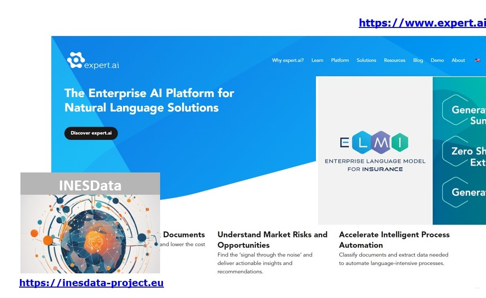
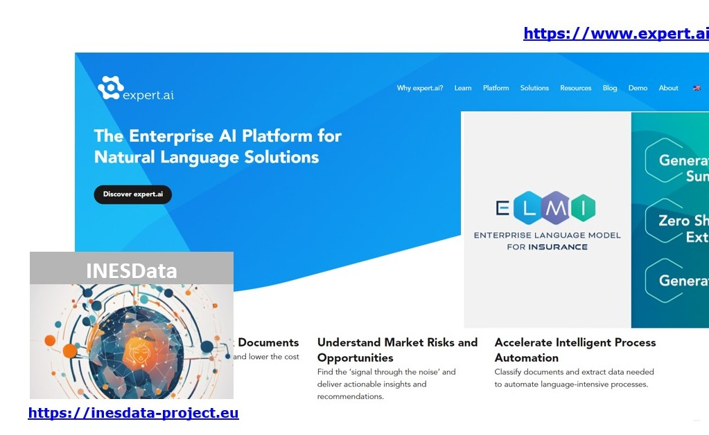

Desde INESData presentamos un nuevo vídeo en el que explicamos cómo el espacio de datos jurídico desarrollado en el proyecto busca transformar el análisis jurídico en nuestro país mediante el uso de tecnologías de inteligencia artificial y procesamiento del lenguaje natural (PLN).
üìù Y si quieres profundizar más en el proyecto, te invitamos a leer el art√≠culo publicado en el blog del Instituto de Ingenier√≠a del Conocimiento (IIC):
üîó Blog IIC.
Celebración de Taller sobre el Uso del Conector INESData
Durante la jornada, se presentó una introducción al sistema INESData, explicando su arquitectura lógica, autenticación y funcionalidades principales del Connector Interface, como la gestión de vocabularios, assets, políticas, contratos, catálogos federados y transferencias de recursos.
La plataforma está desarrollada sobre Eclipse Dataspace Connector (EDC), lo que garantiza su alineación con los estándares europeos de interoperabilidad. El taller permitió a los participantes explorar de forma práctica las capacidades del sistema para el intercambio de datos entre organizaciones de forma confiable.
El 19 de marzo de 2025, en Villers-Cotterêts, Francia, se celebró el EU LDS Launch Conference, donde INESData participó aportando su visión como usuario del Common European Language Data Space (LDS).
INESData resaltó el potencial del LDS para mejorar la gestión de datos lingüísticos en inteligencia artificial y abogó por estándares comunes que faciliten su adopción en distintas industrias.
3CEL es un corpus de datos de extracción de información contractual que contiene 373 licitaciones anotadas manualmente con 19 categorías definidas, sumando un total de 4,782 etiquetas. Este recurso es esencial para la comprensión y revisión de contratos y documentos legales, permitiendo una clasificación estructurada de su contenido.
El desarrollo de 3CEL ha implicado un riguroso proceso incluyó la recolección de datos, definición de etiquetas, transcripción y limpieza de textos, anonimización y anotación de documentos obtenidos de la Plataforma de Contratación del Sector Público de España. Estos contratos corresponden a licitaciones ejecutadas en la Comunidad de Madrid entre diciembre de 2021 y diciembre de 2023. Además, ha servido para entrenar y evaluar modelos avanzados de PLN, destacando el modelo de lenguaje MEL (Modelo del español jurídico) por su precisión y eficiencia en la categorización de spans en textos legales.
La publicación de este corpus supone un avance significativo en la disponibilidad de recursos de PLN en español y abre nuevas oportunidades para investigaciones y aplicaciones en el ámbito legal y tecnológico.
Madrid, 3-4 de diciembre de 2024. En la Primera Cumbre de Espacios de Datos Gaia-X España, evento destacado para el futuro de la tecnología y la economía del dato en España, INESData participa en la sesión "Tecnologías para espacios de datos".
Elena Montiel Ponsoda (OEG-UPM) y Juan Miguel Auñón (GMV), explican cómo crear un espacio de datos mediante la plataforma INESData, las tecnologías desarrolladas y un ejemplo práctico, el espacio de datos de movilidad desarrollado en el proyecto.
INESData se presenta como una herramienta práctica y sencilla para facilitar el despliegue de un espacio de datos.
Madrid, 12 de diciembre de 2024. INESData participó en el UNICO I+D Project Meet-up Madrid 2024, un evento que reunió a los principales proyectos financiados bajo el programa UNICO I+D Cloud. La jornada, organizada en la ETSI de Montes, Forestal y del Medio Natural (UPM) por el proyecto ELADAIS, fue una oportunidad para el intercambio de conocimientos y la generación de sinergias en el ámbito de la innovación digital.
El evento reunió a representantes de proyectos financiados por UNICO I+D Cloud, y se contó con los representantes de la Comisión Europea, como Stefan Bogensberger y Rolf Riemenschneider, así como expertos del Instituto Tecnológico de Informática (ITI), entre ellos Daniel Sáez Domingo.
Esta guía práctica, que se actualiza continuamente a medida que avanza el proyecto, se centra en esta edición en la gobernanza de los espacios de datos, un aspecto crucial para su desarrollo y consolidación.
La nueva versión del Handbook incorpora tres elementos fundamentales:
Guía Práctica sobre Cuestiones de Cumplimiento con la normativa del Espacio de Datos.
Definición de roles en la gobernanza del Espacio de Datos, estableciendo las responsabilidades y funciones de los distintos actores involucrados.
Modelos Contractuales Tipo, diseñados para facilitar acuerdos claros y estructurados entre las partes bajo el marco de gobernanza.
Además de servir como referencia para la creación y gestión de espacios de datos dentro del proyecto INESData, esta versión recoge aprendizajes y referencias de iniciativas internacionales que fortalecen el marco de gobernanza.
Puedes descargarte el documento en el siguiente enlace.
El entorno INESData Local Environment permite a los usuarios familiarizarse con el conector INESData. Mediante la ejecución del entorno local, los usuarios podrán conocer cómo funciona el conector de INESData así como comprobar cómo interactúan varios conectores entre sí.
El entorno está paquetizado y permite utilizar las últimas versiones de INESData Connector (v0.2.0) y del INESData Interface Connector mediante imágenes docker, mediante un simple: docker compose up. Entre las funcionalidades principales se encuentra:
Se ha disponibilizado un colección Postman para realizar ejemplos de interacciones entre los conectores del entorno local de una manera sencilla
Se ha incluido un repositorio para los assets tipo S3 mediante MinIO como parte del despliegue automatizado del conector
Primera versión del Vocabulary Management que permite definir los vocabularios de cada Espacio de Datos en tiempo de diseño y crear automáticamente la UI para la anotación
La transferencia de assets es totalmente funcional desde la intrerfaz
Nos enorgullece anunciar nuestra participación en la Data Week 2024, dentro del marco del Data Spaces Symposium 2024, que se celebró en Darmstadt, Alemania. Durante la sesión "Generative AI: BDVA’s Member’s Experience", tuvimos la oportunidad de compartir nuestras experiencias y avances en la inteligencia artificial generativa junto a otros líderes del sector.
Este evento ha supuesto ser un crisol de innovación y colaboración, donde exploraremos cómo la IA generativa está transformando los espacios de datos y potenciando nuevas oportunidades para la industria.
Madrid, 4-8 de marzo de 2024. Como parte de EELISA Connect 2024, INESData ha organizado y dirigido dos talleres en los que se abordan los avances en el desarrollo de espacios de datos y tecnologías de inteligencia artificial.
Durante el evento, INESData coordinó los siguientes talleres:
"Teaching and Learning Language Technologies (text and speech) in light of Generative AI" (7-8 marzo). Elena Montiel y Patricia Martín Chozas dirigieron esta sesión centrada en la enseñanza y aprendizaje de tecnologías lingüísticas en la era de la inteligencia artificial generativa. Se discutieron aplicaciones innovadoras en educación, procesamiento del lenguaje natural y modelos de lenguaje multilingües. Más información: EELISA Connect Workshop LLT
INESData refuerza su compromiso con la investigación abierta, la inteligencia artificial y la interoperabilidad de datos en Europa.
Nuestros compañeros Gabriela Argüelles Terrón, Patricia Martín Chozasy Víctor Rodríguez Doncel han publicado el artículo "Event Extraction and Semantic Representation from Spanish Workers’ Statute Using Large Language Models" como parte del 36th International Conference on Legal Knowledge and Information Systems (JURIX 2023).
Este pasado 26 de Octubre se presentó el proyecto, retos y objetivos en el >European Big Data Value Forum (EBDVF) durante la sesión "Data Spaces Roadmap and Future Programme". Esta es una oportunidad increíble para compartir nuestra visión y avances en la creación de espacios de datos interoperables y seguros en España y su impacto en Europa.
Puedes encontrar más información sobre el evento en el siguiente enlace.
Publicado el entregable E4. Versión preliminar del handbook.
Los avances en tecnología e inteligencia artificial (IA) han puesto en evidencia la importancia de los datos. En la actualidad, es muy frecuente usar tecnicas de aprendizaje profundo, Machine Learning en ingles, para la creación de sistemas y servicios. Dichas tecnicas necesitan usar una cierta cantidad de datos; es máas, dependiendo de la cantidad y la calidad de los datos usados, el sistema obtenido sera de mayor o menor calidad.
Esta guía practica tiene como objetivo presentar los espacios de datos creados en la incubadora INESData y explicar el proceso de creacion para que los interesados en desarrollar espacios de datos puedan tener una referencia practica. Dado que el proyecto esta aún en sus primeras fases, está versión de la guía se centrara, sobre todo, en explicar que son los espacios de datos así como analizar las diferentes iniciativas internacionales que sirven como referencia.
Puedes encontrar el enlace y descargarte el documento en el siguiente enlace.

 
